索引 #
1 含义 #
- 索引是存储数据库表中的一列或多列的值并对其进行排序的一种数据结构，他通过缩小一张表中需要查询的记录的数目来加快搜索的速度，如果没有索引，数据库将不得不进行全表扫描。
- 索引相当于图书中的目录，可以根据目录上的页码快速找到所需的内容，提高查询速度。
2 优缺点 #
2.1 优点 #
- 通过创建唯一性索引，可以保证数据库表中每一行数据的唯一性。
- 可以大大加快数据的检索速度，避免进行全表的数据扫描，大大减少遍历匹配的行数，这也是创建索引的最主要的原因。
- 可以加速表和表之间的连接，特别是在实现数据的参考完整性方面特别有意义。
- 在使用分组和排序子句进行数据检索时，可以显著减少查询中分组和排序的时间。
- 通过使用索引，可以在查询的过程中，使用优化隐藏器，提高系统的性能。
2.2 缺点 #
- 创建索引和维护索引要耗费时间，这种时间随着数据量的增加而增加。
- 索引需要占用物理空间，数据量越大，占用空间越大。
- 会降低表的增删改的效率，因为每次增删改索引，都需要进行动态维护。
3 在哪些列建立索引 #
- 在经常需要搜索的列上，可以加快搜索的速度。
- 在作为主键的列上，强制该列的唯一性和组织表中数据的排列结构。
- 在经常用在连接的列上，这些列主要是一些外键，可以加快连接的速度。
- 在经常需要根据范围进行搜索的列上，因为索引已经排序，其指定的范围是连续的。
- 在经常需要排序的列上，因为索引已经排序，这样查询可以利用索引的排序，加快排序查询时间。
- 在经常使用在
where子句的列上，因为这样可以加快条件的判断速度。 - 在经常需要统计或分组的列上。
4 不在哪些列创建索引 #
- 对于那些在查询中很少使用的列不应该创建索引，因为既然这些列很少使用到，因此有索引或者无索引并不能提高查询速度，相反，由于增加了索引，反而降低了系统的维护速度和增大了空间需求。
- 对于那些只有很少取值的列也不应该创建索引，因为由于这些列的取值很少，例如人事表的性别列，在查询的结果中，结果集的数据行占了表中数据行的很大比例，即需要在表中搜索的数据行的比例很大，增加索引并不能明显加快检索速度。
- 对于那些定义为
text、image、bit数据类型的列不应该创建索引，因为这些列的数据量要么相当大，要么取值很少。 - 当修改性能远远大于检索性能时，不应该创建索引，因为修改性能和检索性能是互相矛盾的，当增加索引时，会提高检索性能，但是会降低修改性能，当减少索引时，会提高修改性能，但是会降低检索性能。
5 什么情况下索引会失效 #
-
在
where子句中进行null值判断：SELECT id FROM table WHERE num is null;在建立数据库的时候尽量为字段设置默认值，如
int类型可以使用 0，varchar类型使用''，当我们在指定类型大小如int(11)时，其实空间就已经固定了，即使存的是null也是这个大小。 -
在
where子句中使用!=、<>这样的符号：SELECT id FROM table WHERE num != 0;可以考虑使用
between，但是只能是连续的数值：SELECT id FROM table WHERE num BETWEEN 0 AND 1; -
在
where子句中使用in（分两种情况，一种走索引，一种不走索引）：-
走索引：
SELECT id FROM table WHERE num IN (1);其实在
in里面，如果只有一个值的话等价于num = 1。 -
不走索引：
SELECT id FROM table WHERE num IN (1,2);
-
-
在
where子句中=的左边使用表达式操作或函数操作：-
表达式：
SELECT id FROM table WHERE num / 2 = 1; -
函数：
SELECT id FROM table WHERE SUBSTRING(name,1,2) = 'wise';
-
-
在
where子句中使用like模糊查询：SELECT id FROM table WHERE name LIKE 'wise'; -
在使用联合索引时要注意最左原则，例如当联合索引是
index(a,b,c)时，如果where子句中有a就会用到联合索引，但是如果只用到b、c就会失去索引效果。
6 索引分类 #
6.1 从存储结构上来划分 #
从存储结构上来划分，索引可分为 哈希索引（Hash Index）、B 树索引（B-Tree Index、B+Tree Index）。
6.1.1 哈希索引 #
6.1.1.1 含义 #
- 哈希索引基于哈希表实现，只有精确匹配索引所有列的查询才有效。
- 对于每一行数据，存储引擎都会对所有的索引列计算一个哈希码，哈希码是一个较小的值，不同键值的行计算出来的哈希码也不一样。
- 哈希索引将所有的哈希码存储在索引中，同时在哈希表中保存指向每个数据行的指针。
- 在 MySQL 中，只有 Memory 引擎显式支持哈希索引，这也是 Memory 引擎表的默认索引类型，Memory 引擎同时也支持 B-Tree 索引。
- Memory 引擎支持非唯一哈希索引，如果多个列的哈希值相同，索引会以链表的方式存放多个记录指针到同一个哈希条目中。
6.1.1.2 示例 #
假如有如下表：
CREATE TABLE testhash (
fname VARCHAR(so) NOT NULL,
lname VARCHAR(so) NOT NULL,
KEYUSING HASH(fname)
) ENGINE=MEMORY;
表中包含如下数据：

假设索引使用假想的哈希函数 $f()$，他返回下面的值（都是示例数据，非真实数据）：

则哈希索引的数据结构如下：
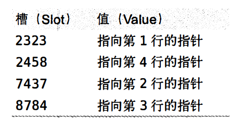
注意每个槽的编号是顺序的，但是数据行不是。
现在，来看如下查询：
mysql> SELECT lname FR 叩 testhash 副 ERE fname='Peter';
- MySQL 会先计算
Peter的哈希值，并使用该值寻找对应的记录指针。 - 因为 $f(‘Peter’)=8784$，索引 MySQL 在索引中查找 8784，可以找到指向第 3 行的指针。
- 最后一步是比较第三行的值是否为
Peter，以确保就是要查找的行。
6.1.1.3 优缺点 #
6.1.1.3.1 优点 #
- 哈希索引把数据的索引以哈希值的形式组织起来，因此检索效率非常高，可以一次定位，不像
B-/B+Tree索引需要进行从根节点到叶节点的多次 I/O 操作。
6.1.1.3.2 缺点 #
-
哈希索引只包含哈希值和行指针，而不存储字段值，所以不能使用索引中的值来避免读取行，不过，访问内存中的行的速度很快，所以大部分情况下，这一点对性能的影响并不明显。
-
哈希索引数据不是按照索引值顺序存储的，因此无法用于排序，因为数据经过哈希算法后，大小关系就可能发生变化，排序是没有意义的。
-
哈希索引也不支持部分索引列匹配查找，因为哈希索引始终是使用索引列的全部内容来计算哈希值的，例如，在数据列
(A, B)上建立哈希索引，如果查询只有数据列A，则无法使用该索引。 -
哈希索引只支持等值比较查询，包括
=、IN()、<=>（注意<>和<=>是不同的操作），也不支持任何范围查询，例如WHERE price > 100，因为数据在经过哈希算法后，其大小关系就可能发生变化。<=> 是安全比较运算法，用来做
NULL值的关系运算，和IS NULL等价。 -
当哈希冲突较多时，哈希索引的性能会下降，冲突越多，下降的程度越大，这是因为：
- 当出现哈希冲突时，存储引擎必须遍历链表中所有的行指针，逐行进行比较，直到找到所有符合条件的行。
- 同时，如果哈希冲突很多的话，一些索引维护操作的代价也会很高，因为当从表中删除一行时，存储引擎需要遍历对应哈希值的链表中的每一行，找到并删除对应行的引用。
6.1.2 全文索引 #
MySQL 的 InnoDB 从 1.2.x 版本开始支持全文检索，如无特殊说明，以下的数据库引擎均为 InnoDB。
6.1.2.1 倒排索引 #
全文检索使用倒排索引来实现，倒排索引同 B+ 树一样，也是一种数据结构，他在辅助表（Auxiliary Table）中存储了单词与单词自身在一个或多个文档所在未知的映射，这通常利用关联数组来实现，主要拥有两种表现形式：
- Inverted File Index（倒排文件索引）：表现形式为{单词，单词所在文档的 ID}。
- Full Inverted Index（详细倒排索引）：表现为{单词，（单词所在文档 ID，文档中的位置）}。
例如，全文检索表为：
| DocumentID | Text 文档内容 |
|---|---|
| 1 | Souyunku Technical team (搜云库技术团队) |
| 2 | Go Technical stack (Go 技术栈) |
Inverted File Index 类型的辅助表存储为：
| Number | Text 分词 | Documents (单词所在文档 ID) |
|---|---|---|
| 1 | Souyunku | 1 |
| 2 | Technical | 1，2 |
| 3 | team | 1 |
| 4 | Go | 2 |
| 5 | stack | 2 |
Full Inverted Index 类型的辅助表存储为：
| Number | Text 分词 | Documents (单词所在文档 ID:文档中的位置) |
|---|---|---|
| 1 | Souyunku | 1:1 |
| 2 | Technical | 1:2 ，2:2 |
| 3 | team | 1:3 |
| 4 | Go | 2:1 |
| 5 | stack | 2:3 |
相比 Inverted File Index，Full Inverted Index 还存储了单词所在的位置信息，因此会占用更多的空间，但是能更好的的定位数据，提供更多的搜索特性。
6.1.2.2 全文检索索引缓存 #
- 辅助表是存在于磁盘上的持久化的表，由于磁盘 I/O 比较慢，因此提供 FTS Index Cache（全文检索索引缓存）来提高性能。
- FTS Index Cache 是一个红黑树结构，根据（word, list）排序，这意味着插入的数据已经更新了对应的表，但是对全文索引的更新可能在分词操作后还在 FTS Index Cache 中，辅助表可能还没有更新，这是因为InnoDB 存储引擎会批量对辅助表进行更新，而不是每次插入后都更新一次，从而提高了 InnoDB 搜索引擎的性能，并且由于其根据红黑树排序后进行批量插入，因此产生的辅助表相对较小。当对全文检索进行查询时，辅助表首先会将在 FTS Index Cache 中对应的 word 字段合并到辅助表中，然后再进行查询。
- 当数据库关闭时，在 FTS Index Cache 中的数据库会同步到磁盘上的辅助表中，当数据库宕机时，一些 FTS Index Cache 中的数据库可能未被同步到磁盘上，那么下次重启数据库时，当用户对表进行全文检索（查询或者插入操作）时，InnoDB 存储引擎会自动读取未完成的文档，然后进行分词操作，再将分词的结果放入到 FTS Index Cache 中，可以通过配置参数
innodb_ft_cache_size控制缓存的大小，默认为 32M，当该缓存满时，会将其中的（word, list）分词信息同步到磁盘的辅助表中，提高该值，可以提高全文检索的性能，但在故障时，需要更久的时间恢复。 - 在 InnoDB 存储引擎中，为了支持全文检索，必须有一个列与 word 进行映射，在 InnoDB 中这个列被命名为FTS_DOC_ID，其类型必须是BIGINT UNSIGNED NOT NULL，并且 InnoDB 存储引擎自动会在该列上加入一个名为FTS_DOC_ID_INDEX的Unique Index，上述操作都由 InnoDB 存储引擎自己完成，用户也可以在建表时自动添加 FTS_DOC_ID，已经相应的 Unique Index，但是必须注意相应的数据类型，否则 MySQL 数据库会报错。
- 文档中分词的插入操作是在事务提交时完成，然而对于删除操作，其在事务提交时，不删除磁盘辅助表中的记录，而只是删除 FTS Index Cache 中的记录，对于要删除的记录，InnoDB 存储引擎会记录其 FTS Document ID，并将其保存在 DELETED Auxiliary Table 中，在设置参数
innodb_ft_aux_table后，用户可以访问information_schema架构下的表INNODB_FT_DELETED来观察删除的 FTS Document ID，由于文档的 DML 操作实际并不删除索引中的数据，相反还会在对应的 DELETED 表中插入记录，因此随着应用程序的运行，索引，索引会变得非常大，此时可以通过optimize table命令手动删除无效索引记录，如果需要删除的内容非常多，会影响应用程序的可用性，此时可以通过innodb_ft_num_word_optimize控制每次删除的分词数量，默认为 2000，可以通过该参数来控制删除幅度。
6.1.2.3 全文索引的查询模式 #
MySQL 数据库支持全文检索（Full-Text Search）的查询，其语法为：
MATCH (coll, col2,...) AGAINST (expr [search_modifier])
search_modifier:
{
IN NATURAL LANGUAGE MODE
IN NATURAL LANGUAGE MODE WITH QUERY EXPANSION
IN BOOLEAN MODE
WITH QUERY EXPANSION
}
其中
- MATCH 指定了需要被查询的列。
- AGAINST 指定了使用何种方法去进行查询。
查询模式主要分为三种，分别是Natural Language、Boolean、Query Expansion。
6.1.2.3.1 Natural Language #
-
全文检索通过 MATCH 函数进行查询，默认采用 Natural Language 模式，表示查询带有指定
word的文档。SELECT * FROM fts_a WHERE MATCH(body) AGAINST('Porridge' IN NATURAL MODE); -- 由于全文检索默认的查询模式为 NATURAL LANGUAGE，因此上面的查询语句和下面的等效 SELECT * FROM fts_a WHERE MATCH(body) AGAINST('Porridge');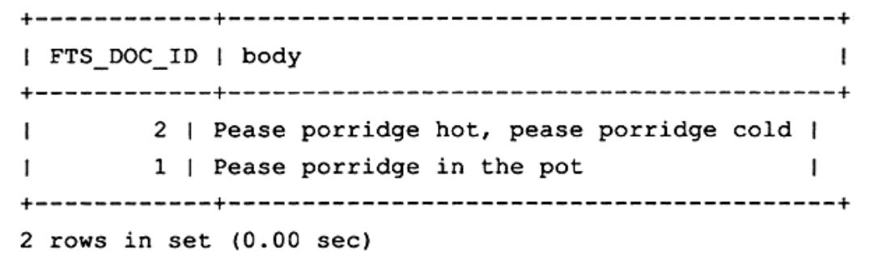
上述语句的查询计划为：
-- 在语句后面加上\G 能够更清晰的查看查询信息 EXPLAIN SELECT * FROM fts_a WHERE MATCH(body) AGAINST('Porridge')\G;
type这列显示fulltext，即表示使用全文检索的倒排索引，而key这列显示了idx_fts，表示索引的名字，可见上述查询使用了全文检索技术。 -
在
WHERE条件中使用了MATCH函数，查询返回的结果是根据相关性（Relevance）进行降序排序的，即相关性最高的结果放在第一位，相关性的值是一个非负的浮点数字，0 表示没有任何相关性。 -
相关性的计算依据以下四个条件：
word是否在文档中出现。word在文档中出现的次数。word在索引列中的数量。- 多少个文档包含该
word。
-
对于 InnoDB 存储引擎的全文检索，还需要考虑以下因素：
- 查询的
word在stopword列中，忽略该字符串的查询。 - 查询的
word的字符长度不在区间[innodb_ft_min_token_size, innodb_ft_min_token_size]内，忽略该字符串的查询，这两个参数用于控制 InnoDB 存储引擎查询字符的长度，在 InnoDB 存储引擎中，innodb_ft_min_token_size的默认值为 3，innodb_ft_min_token_size的默认值为 84。
- 查询的
6.1.2.3.2 Boolean #
- MySQL 数据库允许使用 IN BOOLEAN MODE 修饰符来进行全文检索，当使用该修饰符时，查询字符串的前后字符会有特殊的含义。
- Boolean 全文检索支持以下几种操作符：
-
+表示该word必须存在。 -
-表示该word必须被排除。-- 查询有字符串 Pease，但没有 hot 的文档 SELECT * FROM fts_a WHERE MATCH(body) AGAINST('+Pease -hot' IN BOOLEAN MODE)\G; -
(no operator)表示该 word 是可选的，但是如果出现，其相关性会更高。-- 查询有字符串 Pease 或有 hot 的文档 SELECT * FROM fts_a WHERE MATCH(body) AGAINST('Pease hot' IN BOOLEAN MODE)\G; -
@distance表示查询的多个单词之间的距离是否在distance之内，distance的单位是字节，这种全文检索的查询也称为 Proximity Search。-- 查询字符串 Pease 和 hot 之间的距离在 30 字节内的文档 SELECT * FROM fts_a WHERE MATCH(body) AGAINST('"Pease hot" @30' IN BOOLEAN MODE)\G; -
>表示出现该单词时增加相关性。 -
<表示出现该单词时降低相关性。-- 查询有字符串 like、pot 或 some 的文档，如果出现单词 pot，则对应文档的相关性要增加，如果出现单词 some，则对应文档的相关性要减少 SELECT * FROM fts_a WHERE MATCH(body) AGAINST('like >pot <some' IN BOOLEAN MODE)\G; -
~表示允许出现该单词，但是出现时相关性为负（全文检索查询允许负相关性）。 -
*表示以该单词开头的单词。-- 查询包含以 po 开头的单词的文档 SELECT * FROM fts_a WHERE MATCH(body) AGAINST('po*' IN BOOLEAN MODE)\G; -
"表示短语。-- 查询有字符串 like 或有 hot 的文档 SELECT * FROM fts_a WHERE MATCH(body) AGAINST('like hot' IN BOOLEAN MODE)\G;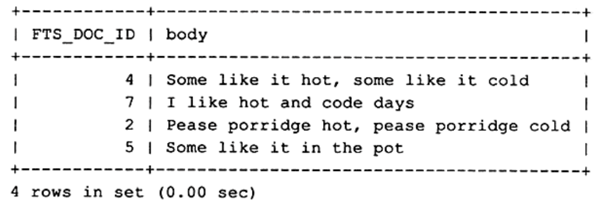
-- 查询有字符串 like hot 短语的文档 SELECT * FROM fts_a WHERE MATCH(body) AGAINST('"like hot"' IN BOOLEAN MODE)\G;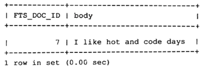
-
6.1.2.3.3 Query Expansion #
- MySQL 数据库还支持全文检索的扩展查询，这种查询通常在查询的关键词太短，用户需要 implied knowledge（隐含知识）时进行，例如，对于单词
database的查询，用户可能希望的不仅仅是包含database的文档，可能还指那些包含MySQL、Oracle、DB2、RDBMS的单词，而这时可以使用 Query Expansion 模式来开启全文检索的 implied knowledge。 - 可以通过在查询短语中添加
WITH QUERY EXPANSION或IN NATURAL LANGUAGE MODE WITH QUERY EXPANSION来开启 blind query expansion（又称为 automatic relevance feedback）。 - Query Expansion 的查询分为两个阶段：
- 第一阶段：根据搜索的单词进行全文索引查询。
- 第二阶段：根据第一阶段产生的分词再进行下一次全文检索的查询。
- 具体实例如下：
-
Natural Language Mode：
SELECT * FROM articles WHERE MATCH(title, body) AGAINST('database' IN NATURAL LANGUAGE MODE);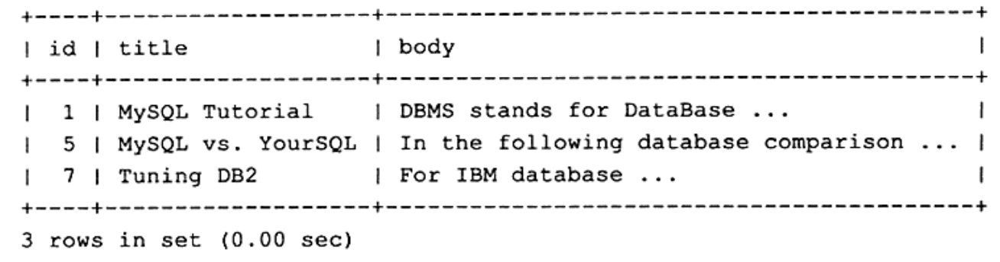
-
Query Expansion：
SELECT * FROM articles WHERE MATCH(title, body) AGAINST('database' WITH QUERY EXPANSION);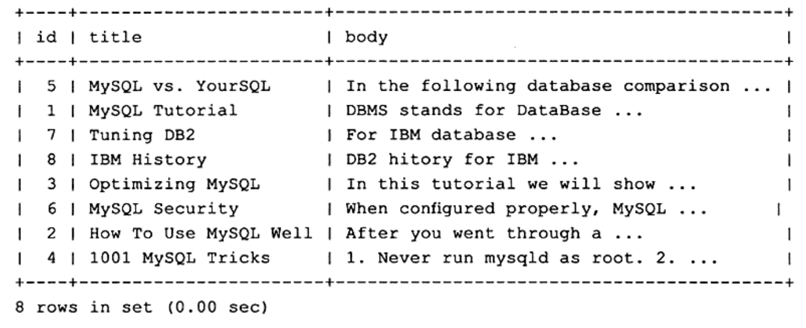
-
6.1.2.4 全文索引的一些限制 #
- 每张表只能有一个全文检索的索引。
- 由多列组合的全文索引的索引列必须使用相同的字符集与排序规则。
- 不支持没有单词界定符（
delimiter）的语言，如中文、日语、韩语等。
6.1.2 B 树索引 #
B 树索引的具体原理可参考 2.2 B 树、B+ 树索引算法原理。
6.2 从应用层次上来划分 #
从应用层次上来划分，索引可分为普通索引、联合索引、唯一索引、主键索引、全文索引。
6.2.1 普通索引 #
- 普通索引是 MySQL 中最基本的索引类型，没有任何限制，允许在定义索引的列中插入重复值和空值。
6.2.2 联合索引 #
- 联合索引是指对表上的多个列进行索引，其创建方法与单个索引的创建方法一样，不同之处仅在于有多个索引列。
- 本质上说联合索引也是一棵 B+ 树，不同的是联合索引的键值的数量不是 1，而是大于等于 2。
- 接下来讨论两个整型列组成的联合索引，假定两个键值的名称分别为 $a$、$b$：
-
多个键值的 B+ 树的情况和单个键值的 B+ 树的情况大致一样，键值都是排序的，通过叶子节点可以逻辑上顺序地读出所有数据，就下面的例子来说，即（1，1）、（1，2）、（2，1）、（2，4）、（3，1）、（3，2），数据按（a，b）的顺序进行了存放。
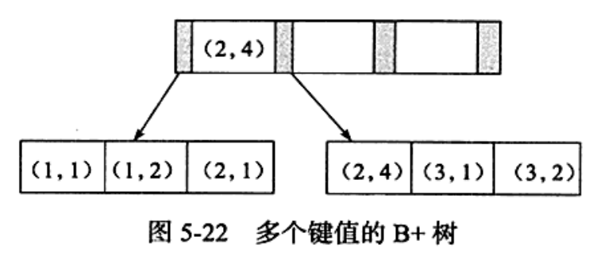
-
因此，对于查询
SELECT * FROM TABLE WHERE a=xxx and b=xxx;，是可以使用（a，b）这个联合索引的，同时，对于单个 a 列的查询SELECT * FROM TABLE WHERE a=xxx;，也可以使用（a，b）这个联合索引，但是对于 b 列的查询SELECT * FROM TABLE WHERE b=xxx;，则不可以使用（a，b）这个联合索引，我们可以发现叶子节点上的 b 值为 1、2、1、4、1、2，显然不是排序的，因此对于 b 列的查询使用不到（a，b）这个联合索引。 -
联合索引的第二个好处是已经对第二个键值进行了排序处理，例如，在很多情况下应用程序都需要查询某个用户的购物情况，并按照时间进行排序，最后取出最近三次的购买记录，这时使用联合索引可以避免多一次的排序操作，因为索引本身在叶子节点已经排序了，具体示例如下：
-
首先创建测试表
buy_log，里面包含两个字段userid和buy_date，同时含有两个索引，分别是userid和(userid,buy_date)。 -
此时，如果只对
userid进行查询，如SELECT * FROM buy_log WHERE userid=2;，则优化器的选择如下图所示。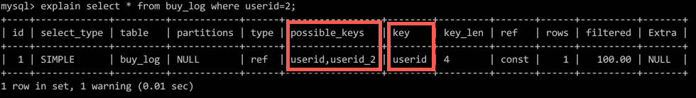
-
从图中我们可以发现，
possible_keys在这里有两个索引可供使用，分别是单个的userid索引和(userid,buy_date)的联合索引，但是优化器最终选择的是userid索引，因为该索引的叶子节点包含单个键值，所以理论上一个页能存放的记录应该更多。 -
接着假定要取出
userid为 1 的最近 3 次的购买记录，如SELECT * FROM buy_log WHERE userid=2 ORDER BY buy_date DESC limit 3;，执行计划如下图所示。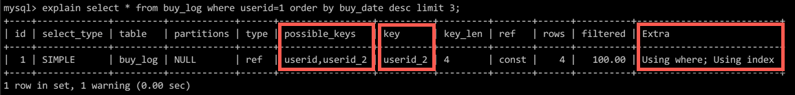
-
同样的，对于上述的 SQL 语句，即可以使用
userid索引，也可以使用(userid,buy_date)索引，但是这次优化器使用了(userid,buy_date)的联合索引userid_2，因为在这个联合索引中，buy_date已经排好序了，根据该联合索引取出数据，无须再对buy_date做一次额外的排序操作。 -
对于上面的查询逻辑，若强制使用
userid索引，如select * from buy_log force index(userid) where userid=1 order by buy_date desc limit 3;，执行计划如下图所示。
-
在
Extra选项中可以看到Using filesort，即需要额外的一次排序操作才能完成查询，而这次显然需要对列buy_date排序，因为索引userid中的buy_date是未排序的。 -
对于联合索引（a，b，c）来说，下列语句同样可以通过联合索引得到结果：
SELECT * FROM TABLE WHERE a=xxx ORDER BY b; SELECT * FROM TABLE WHERE a=xxx and b=xxx ORDER BY c;但是，对于下面的语句，联合索引不能直接得到结果，还需要执行一次
filesort操作，因为索引（a，c）并未排序。SELECT * FROM TABLE WHERE a=xxx ORDER BY c;
-
-
6.2.3 唯一索引 #
- 唯一索引与普通索引类似，不同的是创建唯一性索引的目的不是为了提高访问速度，而是为了避免数据重复。
- 唯一索引列的值必须唯一，允许有空值，如果是联合索引，则列值的组合必须唯一。
- 创建唯一索引通常使用
UNIQUE关键字。
6.2.4 主键索引 #
- 主键索引就是专门为主键字段创建的索引，也属于索引的一种。
- 主键索引是一种特殊的唯一索引，不允许值重复或者值为空。
- MySQL 创建主键时默认为聚集索引，但主键也可以是非聚集索引。
- 创建主键索引通常使用
PRIMARY KEY关键字。
6.3 从表记录的排列顺序和索引的排列顺序是否一致来划分 #
从表记录的排列顺序和索引的排列顺序是否一致来划分，索引可以划分为聚集索引（Clustered Index）、辅助索引（Secondary Index）。
需要注意的是：
- 辅助索引有时也称为非聚集索引（Non-Clustered Index）。
- 不管是聚集索引，还是辅助索引，其内部都是 B+ 树，即高度平衡的，叶子节点存放着所有的数据。
- 聚集索引与辅助索引不同的是叶子节点存放的是否是一整行的信息。
6.3.1 聚集索引 #
6.3.1.1 含义 #
-
InnoDB 存储引擎是 索引组织表，即表中的数据按照主键顺序存放。
-
聚集索引就是按照每张表的主键构造一棵 B+ 树，同时叶子节点中存放的即为整张表的行记录数据，因此也将聚集索引的叶子节点称为数据页。
-
数据页上存放的是完整的每行的记录，索引页中存放的仅仅是键值及指向数据页的偏移量。
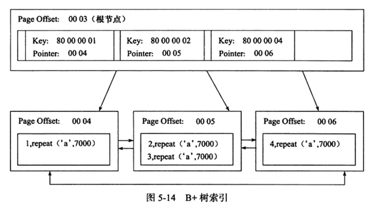
-
聚集索引的这个特性决定了索引组织表中数据也是索引的一部分，同 B+ 树数据结构一样，每个数据页都通过一个双向链表来进行链接。
-
由于实际的数据页只能按照一棵 B+ 树进行排序，因此每张表只能拥有一个聚集索引。
-
在多数情况下，查询优化器倾向于采用聚集索引：
- 聚集索引能够在 B+ 树索引的叶子节点上直接找到数据。
- 由于定义了数据的逻辑顺序，聚集索引能够特别快地针对范围值的查询，查询优化器能够快速发现某一段范围的数据页需要扫描。
-
聚集索引的存储不是物理上连续的，而是逻辑上连续的：
- 数据页通过双向链表链接，页按照主键的顺序排序。
- 每个数据页中的记录也是通过双向链表维护的，物理存储上可以按照不同主键存储。
-
聚集索引对于主键的排序查找和范围查找速度非常快：
-
叶子节点的数据就是用户所要查询的数据，如果用户需要在一张注册用户的表中查询最后注册的 10 位用户，由于 B+ 树索引是双向链表的，用户可以快速找到最后一个数据页，并取出 10 条记录，如下图中，虽然使用
ORDER BY对记录进行排序，但是在实际过程中并没有进行filesort操作，这就是聚集索引的特点。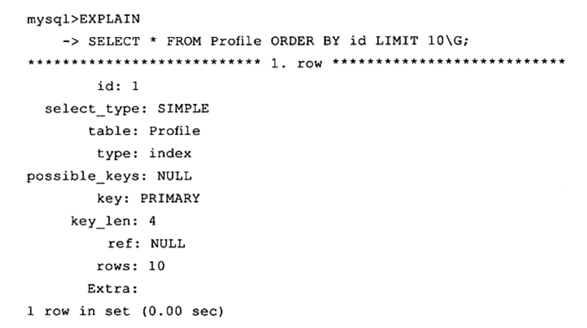
-
另一个是范围查询，如果要查找主键某一范围内的数据，通过叶子节点的上层中间节点就可以得到页的范围，之后直接读取数据即可，下图中的 rows 代表的是返回行数的预估值，不是确切的值，例如下面 SQL 的返回行数的预估值为 14868，实际返回行数为 9946。

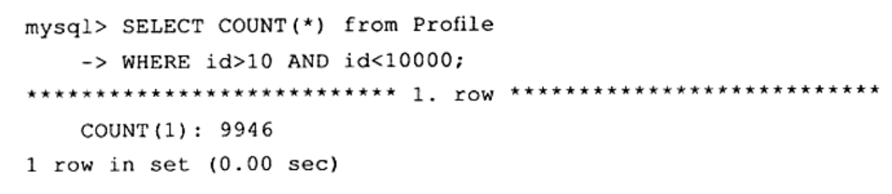
-
6.3.1.2 优缺点 #
6.3.1.2.1 优点 #
- 可以把相关数据保存在一起，例如实现电子邮件时，可以根据用户 ID 来聚集数据，这样只需要从磁盘读取少数的数据页就能获取某个用户的全部邮件，如果没有使用聚集索引，则每封邮件都可能导致一次磁盘 I/O。
- 数据访问更快，聚集索引将索引和数据保存在同一个 B+ 树中，因此从聚集索引中获取数据通常比在非聚集索引中获取数据更快。
6.3.1.2.2 缺点 #
- 插入速度严重依赖于插入顺序，按照主键的顺序插入是插入数据到 InnoDB 表中最快的方式，但如果不是按照主键的顺序来插入数据，那么在插入数据完成之后最好使用
OPTIMIZE TABLE命令重新组织一下表。 - 更新聚集索引列的代价很高，因为会强制 InnoDB 将每个被更新的行移动到新的位置。
- 基于聚集索引的表在插入新行，或者主键被更新导致需要移动行的时候，可能面临页分裂的问题，当行的主键值要求必须将这一行插入到某个已满的页中时，存储引擎会将该页分裂成两个页面来容纳该行，这就是一次分裂操作，页分裂会导致表占用更多的存储空间。
- 聚集索引可能导致全表扫描变慢，尤其是行比较稀疏，或者由于页分裂导致数据存储不连续的时候。
6.3.2 辅助索引 #
-
辅助索引也称非聚集索引，其叶子节点并不包含行记录的全部数据，而是包含辅助索引列的值和主键的值。
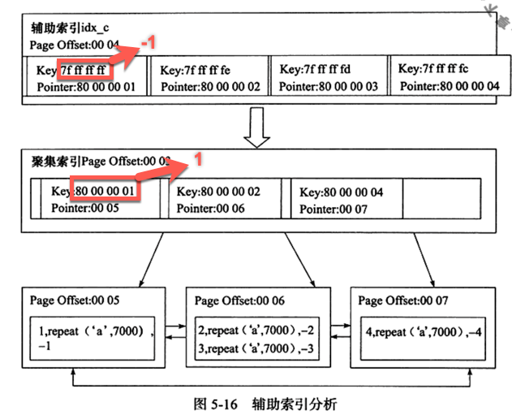
-
辅助索引的存在并不会影响数据在聚集索引中的组织，因此每张表上可以有多个辅助索引，当通过辅助索引来寻找数据时，InnoDB 存储引擎会先遍历辅助索引并通过页级别的指针获得指向主键索引的主键，然后再通过主键索引来找到一个完整的行记录，比如在一棵高度为 3 的辅助索引树中查找数据，那么需要对这可辅助索引树遍历 3 次找到指定主键，如果聚集索引树的高度同样为 3，那么还需要对聚集索引树进行 3 次查找，最终找到一个完整的行数据所在的页，因此一共需要 6 次逻辑 IO 访问以得到最终的一个数据页。
6.4 其它索引 #
6.4.1 覆盖索引 #
6.4.1.1 含义 #
- 覆盖索引是InnoDB中一种特殊的索引，在该索引中包含了查询需要的所有字段，即索引本身已经包含了执行查询所需要的数据，因此不需要进行额外的I/O操作。
- 在InnoDB中，数据根据主键索引进行聚集存储，物理上数据是根据主键索引以B+树的形式来存储的，因此，辅助索引的叶子节点上存储着主键，从而可以建立辅助索引和实际数据行的连接。
- 因此，辅助索引中的任何查找都是先从根节点开始，然后经过分支节点，最后到达正确的叶子节点，并获取主键的值，然后又根据主键的值在主键索引中执行一次随机I/O操作（又一次从根节点开始，然后经过分支节点，最后到达正确的叶子节点）去获取真实的数据行。
- 使用覆盖索引可以避免在主键索引上的随机I/O操作，因为查询需要的所有字段都在覆盖索引中。
6.4.1.2 应用场景 #
- 根据明确的条件来过滤数据（
WHERE）。 - 对数据进行分组（
GROUP BY）。 - 根据覆盖索引中的字段顺序对数据进行排序（
ORDER BY）。 - 查询数据（
SELECT）。
6.4.1.3 具体实例 #
-
假设我们有如下的表：
CREATE TABLE big_table( id int primary key auto_increment, field01 int, field02 int, field03 int, field04 decimal, field05 int ) engine=innodb; -
假如我们有如下查询：
mysql> SELECT sum(field04) FROM big_table WHERE field01=1 GROUP BY field03;当
big_table这张表的数据量非常大时，上面的查询可能会花费很长时间。 -
假如我们想对上面的查询进行优化，我们可以为他创建一个覆盖索引，因此也就不需要去这张表中去查询具体的行了，仅仅需要从索引本身去获取数据字段就可以了，这种方法可以将我们的查询速度提高一个数量级。
-
为了给这个查询创建一个覆盖索引，索引中必须包含
WHERE、GROUP BY、SELECT语句中的所有字段，而且索引中字段的顺序也很重要，通常的规则是先选择WHERE语句中的字段，然后选择ORDER BY和GROUP BY中的字段，最后选择SELECT中的字段，具体的创建索引的语句如下：mysql> ALTER TABLE big_table ADD INDEX (field01, field03, field04); -
然后我们可以使用
EXPLAIN语句来查看查询语句的查询计划，具体如下：mysql> EXPLAIN SELECT sum(field04) FROM big_table WHERE field01=1 GROUP BY field03 \G;*************************** 1. row *************************** id: 1 select_type: SIMPLE table: big_table partitions: NULL type: ref possible_keys: field01 key: field01 key_len: 5 ref: const rows: 1 filtered: 100.00 Extra: Using where; Using index通常查询计划我们可以发现
Extra字段中显示Using index，这意味着InnoDB在执行查询语句时使用了我们之前创建的索引，因此可以确信我们上面创建的为覆盖索引。 -
需要注意的是，InnoDB中自动包括了主键的值，因此，在一些场景下，他们自动的是覆盖索引，例如下面的查询：
mysql> SELECT count(id) FROM big_table WHERE field05=10;下面我们为
field05添加一个索引：mysql> ALTER TABLE big_table ADD INDEX (field05);然后通过
EXPLAIN来查看查询的执行计划：mysql> EXPLAIN SELECT count(id) FROM big_table WHERE field05=10 \G;*************************** 1. row *************************** id: 1 select_type: SIMPLE table: big_table partitions: NULL type: ref possible_keys: field05 key: field05 key_len: 5 ref: const rows: 1 filtered: 100.00 Extra: Using index 1 row in set, 1 warning (0.12 sec)通过查看执行计划我们可以发现
Extra字段里面显示Using index，因此该查询也是使用了覆盖索引，因为主键自动包括在辅助索引里面了，因此id这个字段会自动放在field05这个索引的右边，即(field05,id)。 -
另外一种常用的场景是当查询返回一些无用信息时我们可以使用辅助索引，例如下面的查询语句：
mysql> SELECT * FROM big_table WHERE field03=10;实际上我们只需要返回
field01这个字段，因此我们可以通过重写这个查询语句来改善查询效果，具体的查询语句如下：mysql> SELECT field01 FROM big_table WHERE field03=10;然后为相应的字段创建覆盖索引：
mysql> ALTER TABLE big_table ADD INDEX (field03, field01);这样，整个查询就会走覆盖索引，查询效果就会提升很多。
参考文献 #
- MySQL 索引是怎么支撑千万级表的快速查找？
- 深入理解 MySQL 索引。
- MySQL 索引详解（优缺点，何时需要/不需要创建索引，索引及 sql 语句的优化）。
- Mysql 探索之索引详解。
- 什么情况下数据库索引会失效?
- 《高性能 MySQL（第三版）》
- mysql 运算符 <=>，:=，@，@@的含义。
- MySQL InnoDB 中 B+ 树索引，哈希索引，全文索引 详解。
- 《MySQL 技术内幕（InnoDB 存储引擎）第 2 版》
- 老生常谈：Mysql 索引原理的万字总结！
- 15.6.2.1 Clustered and Secondary Indexes.
- 聚簇索引的优缺点。
- Speed up your queries using the covering index in MySQL.